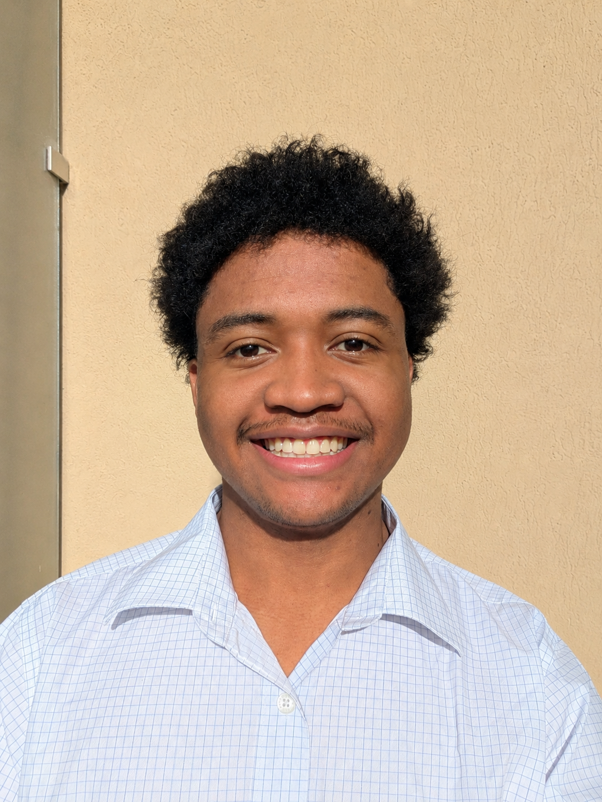
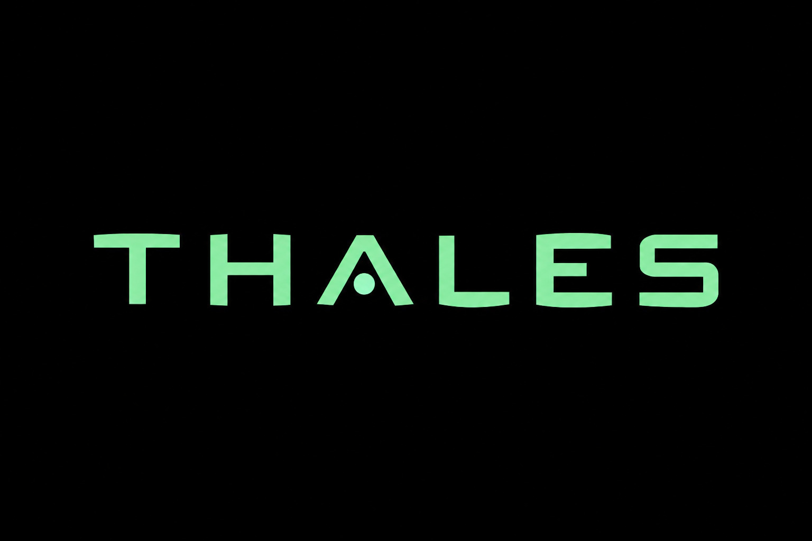
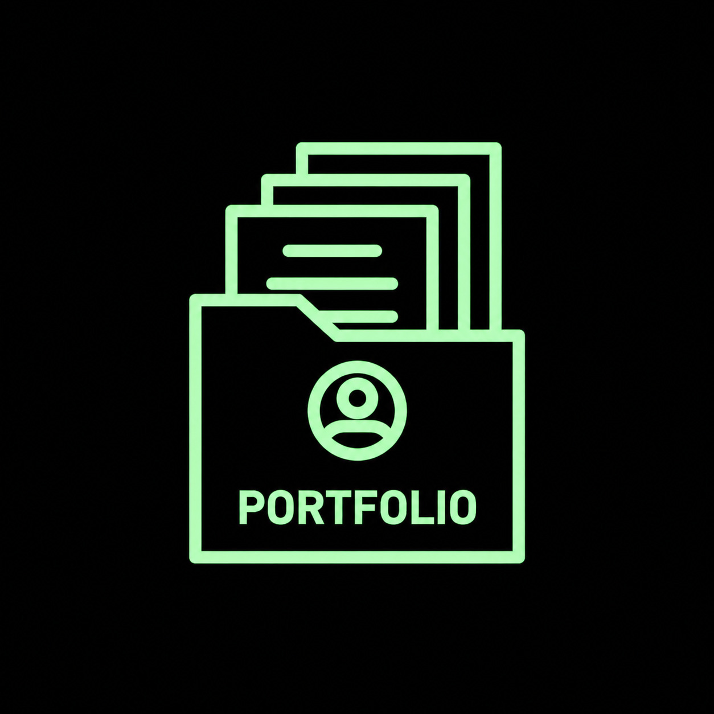

Tsiahy RAJOSOANIRINA
$> _
$> Mon histoire
« J'ai quitté ma famille , mon pays, et tout ce que je connaissais pour venir en France. Pourquoi ? Parce que j'ai une obsession : comprendre comment les systèmes se font pirater... pour mieux les défendre. »
$> Mes Objectifs
Objectif à court terme — Valider ma 2ème année de BUT Réseaux et Télécommunications, puis choisir viser vers le haut : intégrer une école d'ingénieur pour me spécialiser encore plus.
Objectif à long terme — Devenir Freelance en hacking éthique. Mission : Sécuriser des infrastructures, trouver des failles, protéger des entreprises. Indépendant, mais utile.

<about> À PROPOS </about>
“ Je suis étudiant arrivé de Madagascar pour réaliser un rêve : étudier la cybersécurité en France.
Petit, je cliquais partout sans comprendre. Aujourd'hui, je veux savoir comment ça marche vraiment. C'est pour ça que j'ai choisi le BUT Réseaux & Télécommunications.
Ce que j'apprends en cours : configurer des routeurs Cisco, manipuler des VLANs, tester des ACLs, capturer du trafic avec Wireshark. Je débute, mais je suis curieux et je veux tout comprendre.
Aujourd'hui, je vis seul en France, loin de ma famille. L'école est mon terrain de jeu : réseaux, téléphonie, électronique, programmation, systèmes d'exploitation. Je me donne à fond.
Les projets en cours m'ont appris à persévérer et à chercher des solutions par moi-même.
En dehors des cours, je fais un job étudiant le week-end pour aider mes parents à financer mes études et ma vie quotidienne en France.
Si vous voulez voir concrètement ce que j'ai réalisé, je vous invite à explorer mes projets.
>>> whoami
{
"nom": "Tsiahy RAJOSOANIRINA",
"origine": "Madagascar",
"formation": "BUT Réseaux & Télécoms - 1ère année",
"passions": ["cybersécurité", "réseaux", "développement web"],
"objectif": "Freelance en Hacking éthique",
"état_esprit": "Curiosité, discipline, persévérance"
}
█[+] PROJETS [+]


<skills> COMPÉTENCES </skills>
• Linux Debian/Windows (VirtualBox)
• Configuration matériels CISCO (Cisco Packet Tracer, Putty)
• Fragmentation sous-réseaux (Subnetting, Vlan)
• Routage statique et dynamique (OSPF/RIP)
• Translation d'adresse IP (NAT Masquerading, Port Forwarding)
• Filtrage du trafic réseau (ACL)
• Gestion de la redondance (HSRP/STP)
• Adressage IPv6
• PHP/CSS/SQL/JS Jquery (VS Code)
• Organigrammes (Drawio)
• Schéma entités/associations (LibreOffice)
• Etudes des caractéristiques d'un signal et décodage (MyJupyter-Notebook, Logisim)
• Etudes des fonctions complexes et logarithmiques (Matlab)
• Câblage d'un bâtiment
• Etude d'un câble coaxial
• Anglais (B2)
• Allemand (A2)
• Malgache (Langue maternelle)
[~] EXPÉRIENCES [~]
Projets d'équipe académiques
09/2025 - En cours | Université Côte d'Azur, France
Réalisation d'un système embarqué de traçabilité photographique pour banc avionique, à l'aide d'un Raspberry Pi, en partenariat avec Thalès Alenia Space
Travail sous GitHub, application d'un RACI, analyse des risques, réalisation d'un planning
Job étudiant Week-end, U Express
03/2026 - En cours | Saint Laurent du Var, France
Accueil et encaissement : gestion des transactions
Facing : mise en avant des produits et réapprovisionnement
Boulangerie : préparation et cuisson du pain
<connect> CONTACT </connect>
trajosoanirina@gmail.com (perso)
tsiahy.rajosoanirina@etu.univ-cotedazur.fr (université)
linkedin.com/in/tsiahy-rajosoanirina
tsiahy007